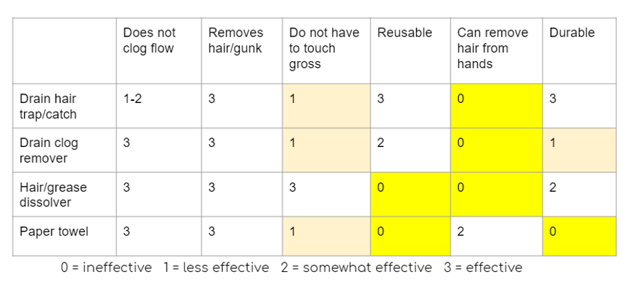

Goal
To develop an easy, clean, environmentally friendly, and durable solution to allow people with long hair or living with long-haired housemates to remove hair off their walls and their hands after showering.
Research
This white-space project was created for a human-centered product design class. As a team of all girls living in shared spaces, we noticed that shower cleanliness, especially with hair, was an issue in girls’ shared bathrooms. We asked Northwestern students in a survey about their current solutions and analyzed the effectiveness of each solution using the following factors:
From this, we were also able to identify a gap in current solutions: many people combed through their hair while showering, and didn't have an easy method to remove hair from their hands.
Problem Definition
To get a better, detailed understanding of our problem, we journey mapped the experience of a woman with long hair showering in a shared bathroom. This journey map allowed us to find various pain points in showering. We were eventually able to narrow our problem down to cleaning hair specifically, and to break down potential solutions into 3 categories.
Iterative Prototyping and Testing
After analyzing advantages of existing solutions and testing mockups, we were able to narrow down our
design to one concept: a brush that could be retracted to remove hair easily into a trash can. As we explored
mechanisms to achieve this, we learned from users and our own testing that a squeeze mechanism was most inutitive.
For the brush aspect of our design, we prototyped different types of bristles using a multi-material 3D printer.
Bristles of different levels of 3 factors were tested. Each “test square” contained bristles of different levels
of material (soft/hard), spacing (wide/narrow), and shape (cylinder/cone). We tested each combination to observe how
each factor affected others.
Our team was able to quickly eliminate wide-spaced bristles as they did not pick up any hair, and was able to narrow the solution down to different combinations of bristles material and shape. We eventually determined that the cylinder-shaped bristles of hard material were best at collecting hair from walls, while the users preferred cleaning hair off their hands with the cone-shaped bristles of hard material.

Final Prototype
Our final prototype involved a simple squeeze mechanism for the user to release hair.
It used 2 springs for the mechanism, requiring minimal force to squeeze and dispense of the hair.
The bristles were a combination of cylinder and cone-shaped bristles to encourage users to both
clean the shower walls (with the cylindrical bristles) as well as wipe hair off their hands onto
the bristles (with the cone-shaped bristles).
To print the inner bristled portion of our prototype (white), we used the multi-material Connex
printer to 3D print the prototype of different materials in different parts. We originally took
the CAD file for the outer meshed portion using an FDM printer, but with issues with
warping and mesh tolerance, moved towards laser cutting acrylic.